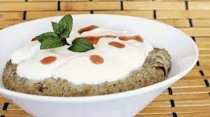

Lakh
Le lakh est un plat Sénegalais fait à base de mil. Mélangé avec du lait caillé, il devient un plat vraiment succulent
Thiebou Dieune

Le Thiebou Dieune est un plat sénegalais fait à base de riz et de poisson. Nous avons le Thiébou Dieune Rouge et le Thiebou Dieune Rouge. Un vrai délice.